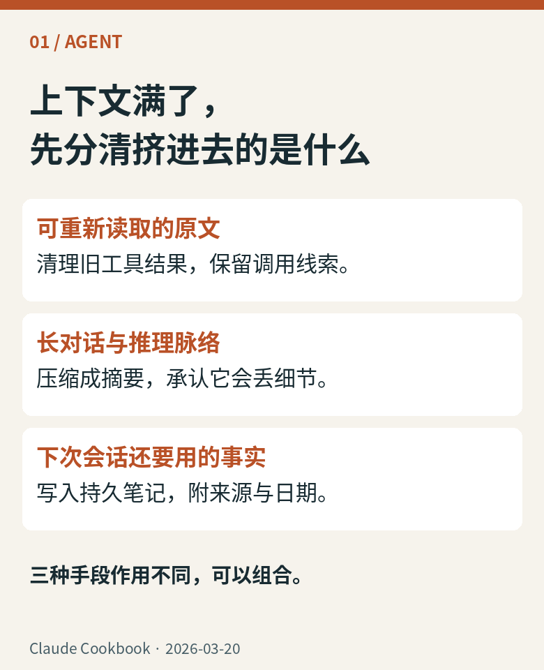
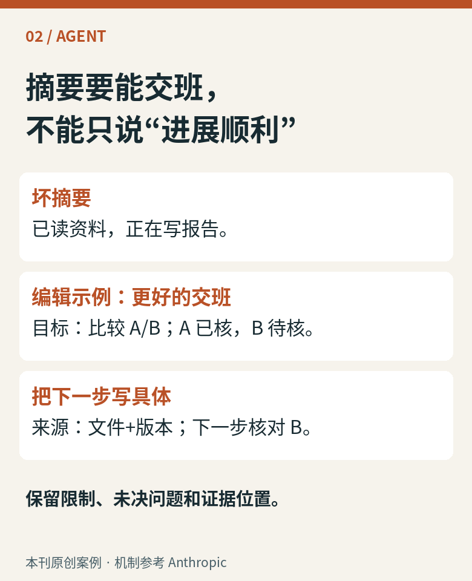
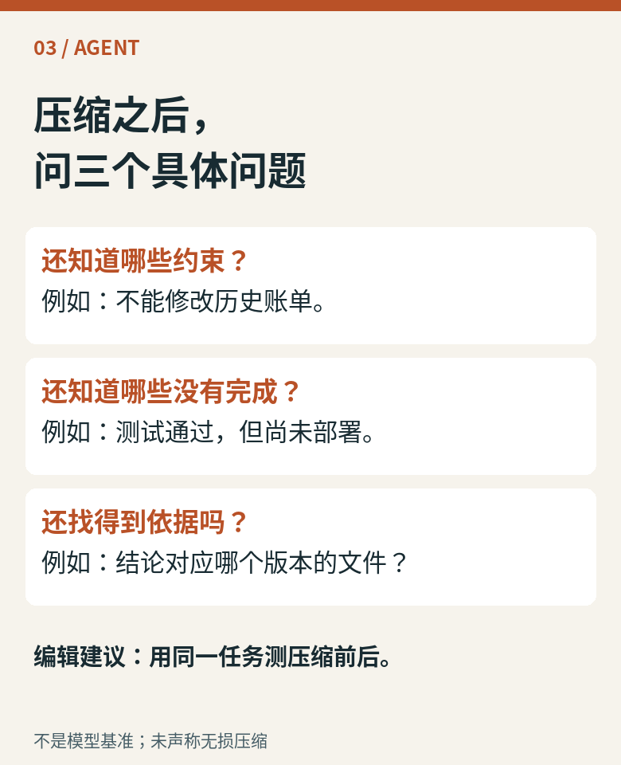
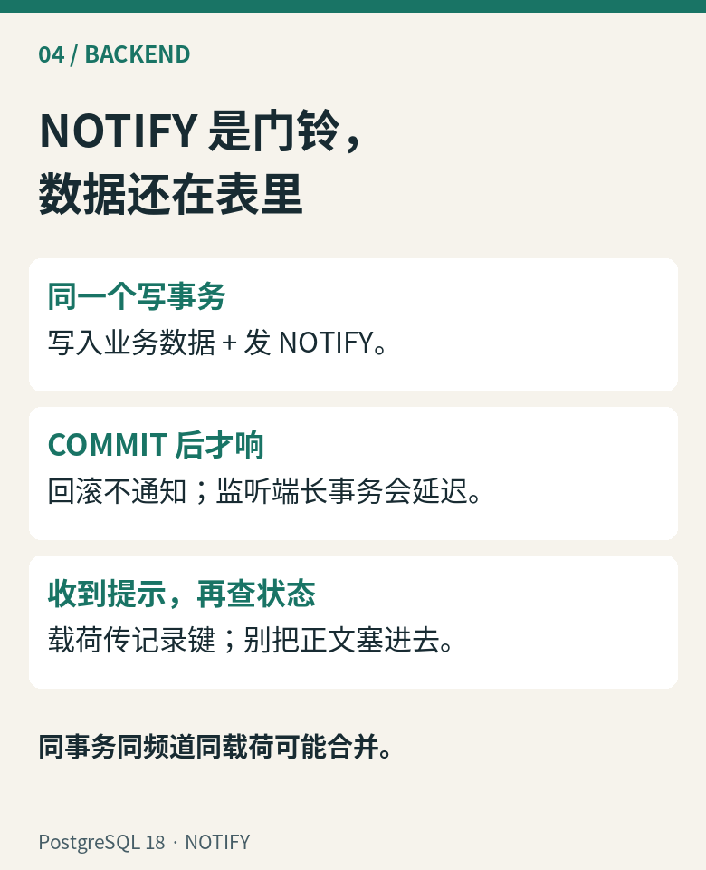
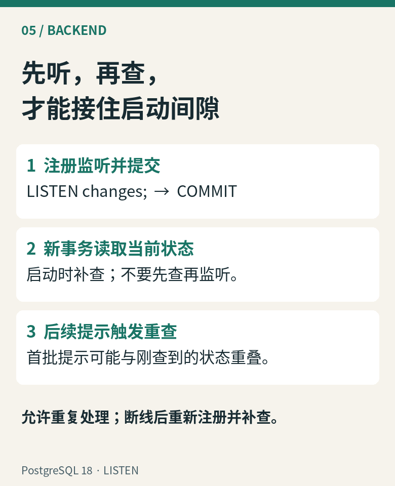
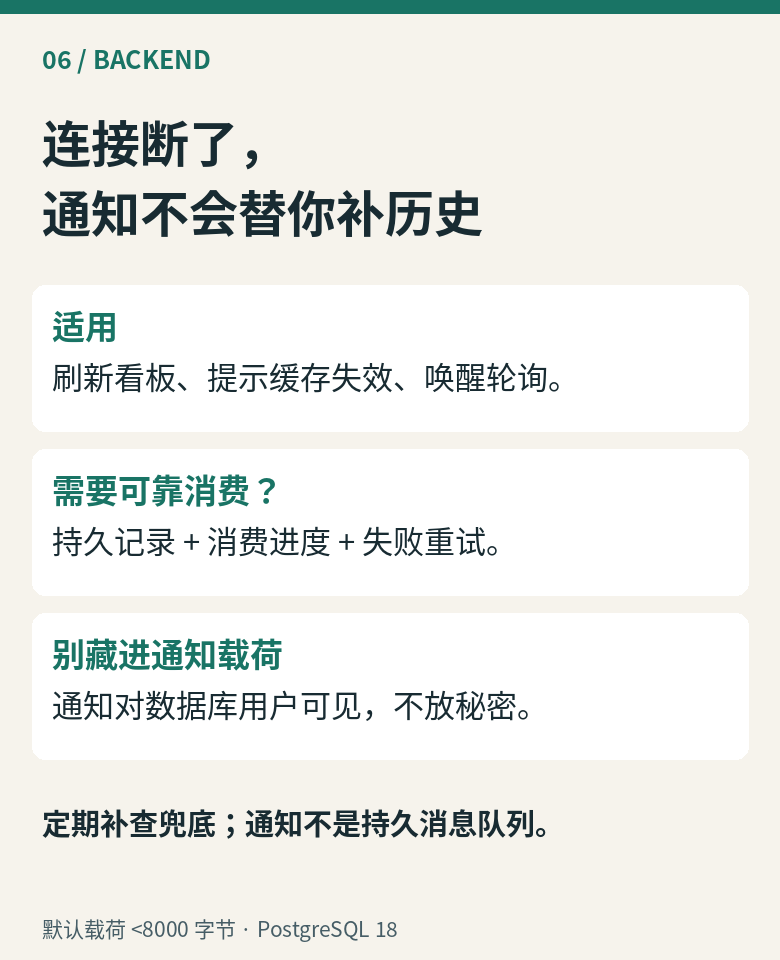
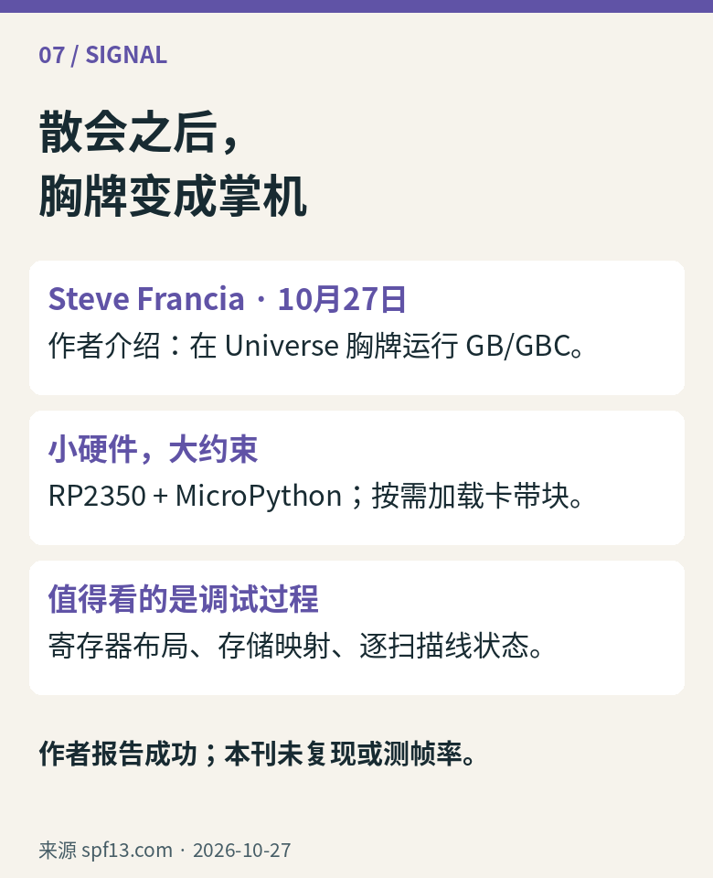

01 / AGENT · 上下文压缩
腾出空间，
也要留下交班线索。
长任务读了很多文件，却在摘要之后忘了下一步。先区分可以重新获取的资料、正在推进的任务状态和需要跨会话保存的知识。

图 1 · Claude Cookbook · 2026-03-20。原创解释图，非产品或 X 截图。
图 2 · 本刊原创案例 · 机制参考 Anthropic。原创解释图，非产品或 X 截图。
图 3 · 不是模型基准；未声称无损压缩。原创解释图，非产品或 X 截图。可复制摘要：给交班单一个结构
目标｜硬约束｜已完成及证据｜未决问题｜下一步｜来源位置与版本。此模板是本刊编辑建议。以“比较 A/B 方案”为例，别只写“已调研”：记录 A 的依据、B 尚未核实的假设，以及下一次要读的文件。
摘要是有损转换，适合长对话；可重新读取的工具输出可以清理，但重新获取也有成本，且内容可能已变。长期笔记需要维护有效期与来源。关键授权与限制应由系统持续提供，不能只寄希望于摘要。验收应比较相同任务压缩前后的约束遵守、未完成事项和证据定位，不能只看 token 变少。本文没有运行模型对比实验。
02 / BACKEND · LISTEN / NOTIFY
数据库响一声，
应用再去看一眼。
看板不必每次都盲等轮询。PostgreSQL 可以在事务提交后通知监听连接；可靠状态仍保存在业务表。

图 4 · PostgreSQL 18 · NOTIFY。原创解释图，非产品或 X 截图。
图 5 · PostgreSQL 18 · LISTEN。原创解释图，非产品或 X 截图。
图 6 · 默认载荷 <8000 字节 · PostgreSQL 18。原创解释图，非产品或 X 截图。可复制示例：同事务写数据与通知
BEGIN;
UPDATE dashboard SET value = 42 WHERE id = 7;
SELECT pg_notify('changes', '7');
COMMIT;
示例假设 dashboard 已存在且 id=7 可见；通知表达“请重新查看”，不证明 UPDATE 一定改到行。监听端使用保持存活的会话，先提交 LISTEN，再在新事务查询初始状态；收到提示或重连后重新查询，定期补查兜底。连接池必须保留监听会话，不能任意把它换走。
这条链路不提供离线历史重放或逐条确认；若业务要求每件事必处理，另建持久消费记录。慢监听事务会阻止通知队列清理，队列满会使发通知事务提交失败；保持短事务并监测 pg_notification_queue_usage()。适合低成本唤醒与刷新提示，不能直接替代可靠消息系统。
03 / SIGNAL · 创作者的新玩具
把会议胸牌，
变成 Game Boy Color。
Steve Francia 在10月27日记录了与 Gemini 一起调试胸牌模拟器的过程。这个项目好玩之处，是把老游戏机的行为塞进受限的小硬件。

图 7 · 来源 spf13.com · 2026-10-27。原创解释图，非产品或 X 截图。作者介绍：项目使用 RP2350、MicroPython Viper 与外接 PSRAM；卡带块首次用到时才读取。原文还记录了画面撕裂与文字缺失如何追到扫描线状态和存储访问，不能把“能跑”简单归功于一段提示词。
编辑看点：真正有趣的是可追踪的调试过程。运行效果与性能属于作者报告，本刊未复现，不推导“所有游戏兼容”。项目不分发商业游戏 ROM，体验需自备合法内容。读作者原文与演示 ↗
来源坐标与阅读边界
资料核验：2026-10-29 UTC+8。Agent 为机制选读，参考 Anthropic 上下文工程（2025-09-29）及 Claude Cookbook（2026-03-20）。本文不依赖具体 beta API，不引用性能实验数字。
后端锁定 PostgreSQL 18：NOTIFY、LISTEN；滚动文档核验于本期日期。示例未运行数据库实测。
动态原发2026-10-27：Steve Francia 本人技术记录及原始项目；作者身份以其本人介绍为据。Simon Willison 博客10月27日亦记录了现场项目。已主动访问 @simonw 的 X，返回403后停止该路径，无法核验原帖日期与上下文；不引用帖文或热度。账号对应关系见本人介绍。外部截图转载权未确认，改用原创来源卡，无伪造截图或外部图片。